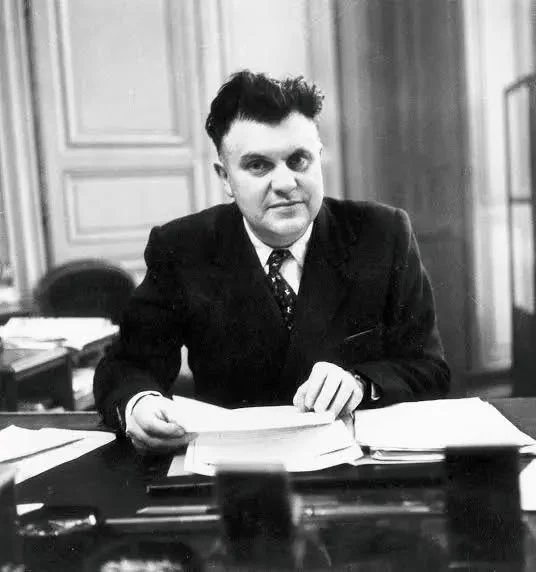

Réponse sur X
Marcel Paul, de la Résistance au service public de l’énergie
Date de publication sur X · 9 avril 2026
Repères éditoriaux
Nous rendons hommage à Marcel Paul, résistant, déporté et ministre communiste lors de la nationalisation de l’électricité et du gaz en 1946.
Texte de la publication sur X
@Militantgaucher Merci au camarade Marcel Paul. Résistant, déporté à Buchenwald, ministre communiste. C’est lui qui a nationalisé EDF en 1946. https://t.co/PEFlBptRxp

Sources
PCF 79 · @79Parti sur X · AR-0005-TW-2042022647161077976
À lire aussi · Présentation de la proposition de loi sur le service public de l’énergie · Le lien vidéo
Publications associées
- 8 avril 1946. Quatre-vingts ans de service public de l’électricité · Même dossier sur la nationalisation de 1946